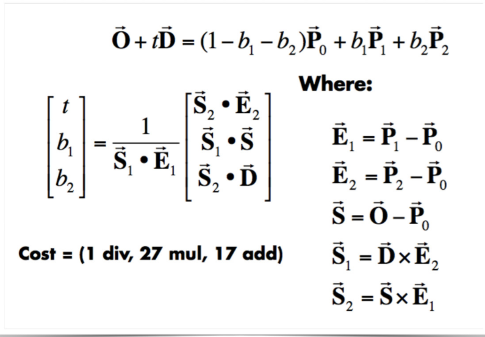
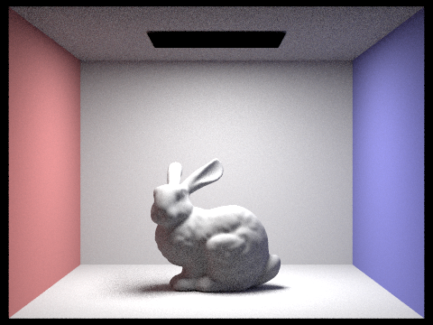
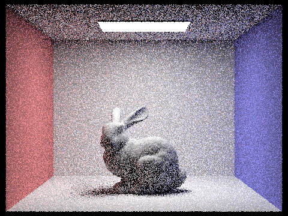
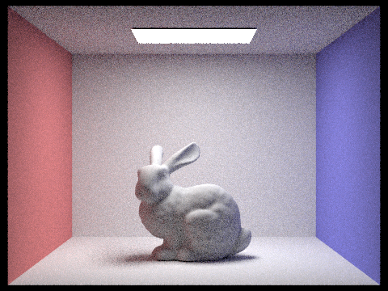

Overview
In this project, I implemented the ray generation, triangle intersection, and sphere intersection
algorithms.
Then, using the average of centroids for a heuristic, I implemented the BVH algorithm to speed up image
renderings.
I compared the differences in noise between hemisphere sampling and importance sampling, then added indirect
lighting for global
illumination. Finally, I enabled adaptive sampling by converging based on the pixel's convergence value and
compared the difference in sampling rate
for different regions of the image.
Part 1: Ray Generation and Intersection
To implement ray generation, I first translated the normalized input camera coordinates to camera space
coordinates by first translating the input x and y coordinates by -0.5, then scaling with
tan(0.5*radians(hFov)) for x and tan(0.5*radians(vFov)) for y and normalizing.
I went from the ray in camera space to the ray in world space by using the camera-to-world rotation
matrix on camera space coordinates and normalizing it to get the direction vector in world space.
I set the origin for the world space ray to the camera position in world space.
We used this function for generating camera rays in raytrace_pixel, where we iterated num_samples times
and in each iteration, we called a uniform random grid sampler between range [0,1] and added it to x and
y.
We normalized it by width and height of sampleBuffer. We used est_radiance_global_illuminance then
updated the pixel in the sample buffer.
We had primitive intersections with triangles and spheres.
To test for intersections with the sphere given an input ray, and the min_t and max_t of the ray, I used
the discriminant.
If the discriminant was equal to zero, then there was an intersection at one point and if it was greater
than zero then there was an intersection at two points.
Otherwise, there is no intersection. I used the quadratic formula to find the min_t and max_t of the
ray, where at^2 + bt + c = 0, a = dot(r.d, r.d), b = dot(2*(r.o - this->o), r.d), and c
=dot((r.o-this->o), (r.o - this->o)) - (this->r2).
If there was an intersection, I checked that the updated t1 and t2 found with the quadratic equations
were within the range of min_t and max_t.
If they were I updated the ray’s max_t to be the nearest intersection.
Also, I updated the Intersection structure, computing the surface normal which is the normalized point
that intersects the sphere at min(t1,t2).
For the triangle intersection algorithm, I tested to see if the ray intersected with the triangle using
the Moller Trumbore algorithm.
div align="center">
|

Moller Trumbore Algorithm
|
I checked whether the resulting t was valid and within the range of the ray’s min_t and max_t, and used
valid barycentric coordinates for updating the nearest intersection point of the ray and getting the
surface normal. I updated the intersection structure.
Part 2:Bounding Volume Hierarchy
For the BVH construction algorithm, I initiated a BBox and expanded it to include all the primitives from
start to end, and computed the average centroid of all the primitives.
If the number of primitives was more than max_leaf_size, then we partitioned the left and right
iterators depending on if the centroid value was less than the average centroid value.
I chose the axis that was the most evenly split between the left and right nodes.
Then, I recursed on the left and right nodes. If the number of primitives was less than the
max_leaf_size, I returned the leaf node.
It took 0.0916 seconds to render the cow with bvh acceleration compared to around 40 seconds without BVH
acceleration.
It took 0.1661 seconds to render the beetle with BVH acceleration compared to 43 seconds without BVH
acceleration.
Using the BVH improved the runtime from linear runtime to log n runtime because we could ignore nodes with
bounding boxes if there was no ray intersection and traverse through the nodes more quickly.
We do not have to linearly iterate and test every single primitive and instead only test for intersection
with the primitive if it first intersects the bounding box.
Part 3:Direct Illumination
For direct lighting with uniform hemisphere sampling, I iterated through
scene->lights.size()*ns_area_light samples.
Since we are doing uniform hemisphere sampling for ray directions, I used the constant 1/(2*PI) as the
distribution p(w).
In each iteration, I estimated the outgoing light with the reflection equation.In each iteration, I
estimated the outgoing light with the reflection equation.
First, I got a sample direction from the hemisphereSampler and used it to get the sample ray with an
origin of hit_p.
I used world space for the ray’s direction.
If there was an intersection with the sample ray, I solved for the reflection equation using the
estimator.
For the estimator, I multiplied together the z-component of the ray’s direction(cos), bsdf, and the
luminance, then divided by the distribution p(w).
The resulting value was the average of the samples.
For direct lighting with importance sampling, I iterated scene->lights times and if it was a delta
light(point light source), I only sampled once and if it wasn’t I sampled ns_area_light times.
Using sample_L for the light at hit_p I found the emitted radiance, the probability density function
value, and sampled direction wi between the light source and p.
I then created a ray with origin hit_p and direction wi, and if there was an interaction with the sample
ray, I applied the estimator equation.
I multiplied together the emitted radiance, bsdf, and cosine, then divided by the probability density
function value. I then took the average.
-
Focus on one particular scene with at least one area light and compare the noise levels in soft
shadows
when rendering with 1, 4, 16, and 64 light rays (the -l flag) and with 1 sample per pixel (the -s
flag)
using light sampling, not uniform hemisphere sampling.
The results from hemisphere sampling have some more noise and blur compared to the lighting sampling since
for hemisphere
sampling we are sampling uniformly from a hemisphere in contrast to lighting sampling in which we
sample the lights directly. Direct lighting via importance sampling gives better results since we only
consider sampling
between the light source and the hit point of the ray directions, then measure the total amount of light
that exits.
Part 4:Global Illumination
To implement the at_least_one_bounce_radiance function, I returned one bounce radiance and extra bounces
with recursion depending on the Russian Roulette probability and the max_ray_depth. If the max_ray_depth
was 0, I only returned zero_bounce and if it was 1 I returned only one bounce. My
at_least_one_bounce_radiance function called the one_bounce_radiance function and depending on whether
the coin flip with conditional probability of 0.7 was heads or if the ray depth was the max ray depth
and greater than one, then I checked whether the ray was intersecting and could recurse. I used the
estimator function which involved calling itself multiplied to bsdf and cosine, divided by the
probability density function. If it used Russian roulette, I divided by the conditional probability 0.7.
I summed up the returning results to get the global illumination.
In indirect lighting, we estimate bounces of light with recursion and importance sampling, resulting in
images where light bounces off of objects's surfaces to another surface in the -w direction and adds
indirect lighting.Direct lighting, however, only directly lights up the regions where there is a light
source directly
pointing at it, and hence looks darker.
|

Indirect Illumination
|
To render indirect illumination, I subtracted one_bounce_radiance from the recursive call
at_least_one_bounce since indirect illumination doesn’t involved one_bounce or zero_bounce. For direct
illumination, I left out the recursive calls at_least_one_bounce and only included one_bounce and
zero_bounce.
-
For CBbunny.dae, compare rendered views with max_ray_depth set to 0, 1, 2, 3, and 100 (the -m flag).
Use
1024 samples per pixel.
There is no indirect lighting when max_ray_depth is 1, and only occurs when max_ray_depth is greater than 1.
For max_ray_depth of 1, there is only direct lighting. For max_ray_depth of 2 and 3, the images are brighter
since
it accounts for indirect bounces of light. It is hard to tell much difference at max_ray_depth of 100;
however, there is slight more light around the wall surfaces.
-
Pick one scene and compare rendered views with various sample-per-pixel rates, including at least 1,
2,
4, 8, 16, 64, and 1024. Use 4 light rays.
As the sample-per-pixel rate increases, the images have less noisy. Increasing the number of samples over a
pixel area increases the accuracy for estimating the radiance.
|

sample-per-pixel rate=1
|
|

sample-per-pixel rate=16
|
|
sample-per-pixel rate=1024
|
Part 5:Adaptive Sampling
To add adaptive sampling, I measured the pixel’s convergence per every interval of batch samples. During
each iteration, I added the samples illuminance and illuminance**2 into variables s1 and s2. I found the
mean, variance, and pixel’s convergence value with the formulas found in the spec. If the pixel’s
convergence value was less than maxTolerance*mean, I exited the loop and updated the sample buffer’s pixel
value for the location to the average Vector3D and set sampleCountBuffer for the location to the actual
number of samples used before converging.
-
Pick one scene and render it with at least 2048 samples per pixel. Show a good sampling rate image
with
clearly visible differences in sampling rate over various regions and pixels. Include both your
sample
rate image, which shows your how your adaptive sampling changes depending on which part of the image
you
are rendering, and your noise-free rendered result. Use 1 sample per light and at least 5 for max
ray
depth.
https://cal-cs184-student.github.io/sp22-project-webpages-LisaCheung/proj3-1/index.html